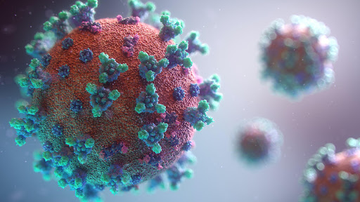

In a language that we occasionally lapse into a very simple expression, can we absorb you like a sponge? The mental well-being of the masses has become the talking point more than the covid itself. Not to forget that mental health needs utmost attention and understanding. The word trauma has been genuine lingo these days. What influence does this term hold?
The American Psychological Association defines trauma as “an emotional response to a terrible event like an accident, or natural disaster.” Physicians may very well argue that they owe patients only two things, their skill and time not their life. But during these tough times, without an iota of uncertainty doctors around the world have indeed given their lives. This pandemic has destroyed lives, threatened livelihoods, and has caused a menace to day-to-day activities and not to forget the life amidst quarantine. Prolonged exposure to the pandemic over the past year has had a knock-on mental health. We have seen the stocks of anxiety, depression, and trauma soar sky-high. Rest assured the psychiatrists are indeed helping out their brethren. Helping people understand the basics and to make them feel confident to improve the situation will remain their priority to tackle the textbook agonizing event.
We are shrinking day by day, but in actuality, life isn’t greyscaled and not everyone’s getting traumatized. These are one-off experiences and people tend to relieve themselves in numerous ways and expressions. Human brains respond in two ways :
- It either becomes maladaptive
- Or it completely shuts down
The best doctors in the city allow patients to vent, which many experts consider as the best therapy, which along with biophysical health which covers various massages can do wonders. This can also find solutions to re-triggered isolation traumas. There is a delicate balance between trying to avoid such traumatic behavior and forcing intense traumatic therapy.
And I’m not surprised at the ease with which we forget the implications of doctors who are at the forefront of such an unparalleled health crisis, even they are expected to have breakdowns, depressions, and somatization. Doctors have barely slept, dreading they may not wake up again, they have been on their tip-toe working over shift for a very long time now. Imagine the state of confident doctors collapsing? Usually, doctors will always be in two minds to talk to a psychiatrist and they don’t believe they need one. Coping with this will remain key to staying true to Darwin’s theories of natural selection and survival of the fittest. If the balance is skewed then we may have to contemplate and start choosing- alter, avoid, adapt, or accept.